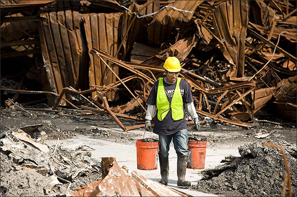

The cleanup process following a disaster is essential for restoring normalcy, but it also brings forth numerous health and safety risks that demand careful attention. Personal protective equipment (PPE) such as gloves, goggles, masks, and sturdy footwear should be prioritized to mitigate exposure to hazardous materials and contaminants. Before initiating cleanup activities, a thorough assessment of the affected area is necessary to identify potential hazards like sharp debris, unstable structures, chemical spills, or biological contaminants.
Handling debris requires caution, especially with sharp objects, glass, or heavy materials, necessitating the use of appropriate tools and techniques to prevent injuries. Moreover, electrical hazards must be avoided by disconnecting power sources and refraining from handling electrical components without proper training. Chemical spills or hazardous substances demand precautions like the use of spill kits and adherence to proper containment, neutralization, and disposal protocols. Similarly, biological hazards like mold, bacteria, or animal waste require disinfectants and protective gear during cleanup.
Respiratory protection such as N95 masks should be worn in environments with dust, mold spores, or other airborne particles. Safe water handling practices are crucial if water sources are compromised or contaminated, urging individuals to avoid direct contact and treat water as necessary for safety. Heat stress and fatigue must be addressed through regular breaks, hydration, and awareness of signs of exhaustion, particularly in hot and humid conditions. Emotional support is equally vital, emphasizing communication, support services, and self-care for those involved in cleanup efforts. Collaborating with local authorities, community organizations, and volunteers ensures effective coordination, resource sharing, and mitigation of emerging health and safety concerns. By prioritizing these measures during the cleanup phase, individuals and communities can minimize risks and promote a safe and efficient recovery process.